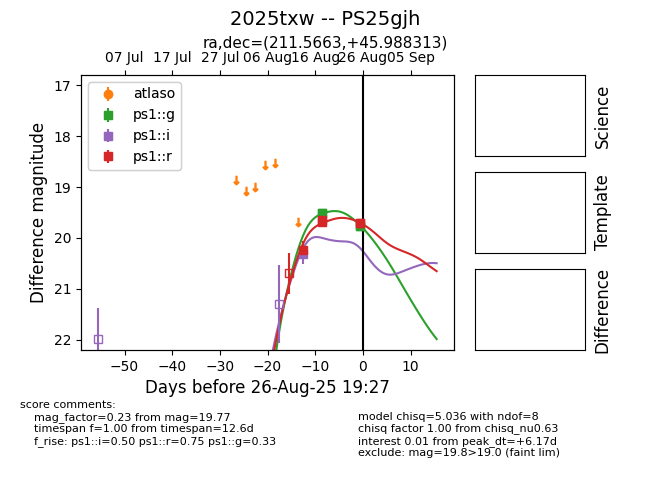

Target 2025txw at 2025-08-26 21:32, see:
TNS: wis-tns.org/object/2025txw
YSE: ziggy.ucolick.org/yse/transient_detail/2025txw
alt names
2025txw (yse,tns)
PS25gjh (panstarrs)
coordinates:
equatorial (ra, dec) = (211.5663,+45.98831)
galactic (l, b) = (89.6901,+66.01388)
photometry
last ps1::g=19.77, ps1::i=20.32, ps1::r=19.70
4 ps1::g, 1 ps1::i, 5 ps1::r detections
